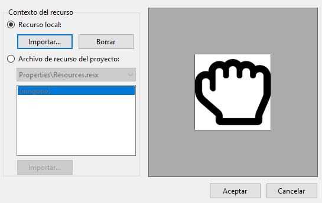
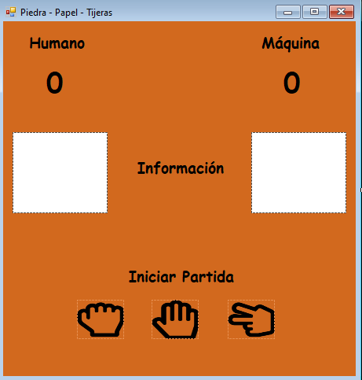
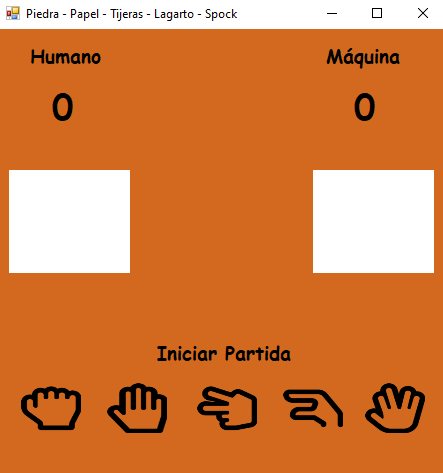

<!DOCTYPE html>
<html lang="es">
	<head>
		<meta charset="utf-8">
		<title>Windows Forms</title>
		<meta name="viewport" content="width=device-width, initial-scale=1.0">
		<link rel="stylesheet" href="../../../reveal/dist/reveal.css">
		<link rel="stylesheet" href="../../../reveal/dist/theme/white.css" id="theme">
		<link rel="stylesheet" href="../../../reveal/plugin/highlight/custom.css">
	</head>

	<body>
		<div class="reveal">
			<div class="slides">
                <section data-markdown>
<script type="text/template">
## Windows Forms
#### Juegos en Windows Forms (I)
#### Juegos estáticos
</script>
</section>

<section data-markdown>
<script type="text/template">
## Juegos estáticos

- Juegos donde no hay movimiento de personajes, colisiones, gravedad... etc
- Ejemplos: juegos de tableros, azar, etc.

</script>
</section>
    
<section data-markdown>
<script type="text/template">
## El elemento PictureBox

- Permite definir imágenes en la ventana, posicionarlas en diferentes ubicaciones con distintos tamaños
- Pueden ser imágenes fijas en una posición o móviles

</script>
</section>

<section data-markdown>
<script type="text/template">
## Carga de imágenes por código

```cs
// Cargamos la imagen "prueba.png" en el PictureBox "imgPrueba"
imgPrueba.Load("prueba.png");
```

</script>
</section>

<section data-markdown>
<script type="text/template">
## Carga de imágenes desde Propiedades

Vamos a la propiedad *Image* e importamos alguna imagen local

<div align="center">
    
</div>

</script>
</section>
    
<section data-markdown>
<script type="text/template">
## Ejemplo

- Crea un proyecto Windows Forms llamado **PiedraPapelTijera**
- Crea una carpeta llamada *imagenes* en el panel derecho
   - Menú *Proyecto* - *Nueva carpeta*
- Añade dentro las imágenes que puedes descargar [aquí](../../../soluciones/iconos_piedra_papel_tijeras.zip)
   - Márcalas para que se copien a la carpeta de salida

</script>
</section>

<section data-markdown>
<script type="text/template">
## Ejemplo

Crea un formulario como este (usando *Labels* y *PictureBox*)

<div align="center">
    
</div>

</script>
</section>

<section data-markdown>
<script type="text/template">
## Ejemplo

- Tamaño ventana: 465 x 490
- Color de fondo: Chocolate (*Web*)
- Tipo de letra: Comic Sans MS 14 pt
- En los *PictureBox* inferiores, ir a la propiedad *Imagen* e importar la imagen correspondiente
- Propiedad *SizeMode*: *StretchImage* en todos los *PictureBox*
- Dar un nombre a los 5 *PictureBox* y a las etiquetas de *Información* y de puntos, al menos

</script>
</section>
    
<section data-markdown>
<script type="text/template">
## Ejercicio propuesto (I)

Añadir la siguiente funcionalidad:

- Al hacer clic en la etiqueta *Iniciar Partida*, se pondrán a 0 los puntos, se quitará el texto de la etiqueta de *Información* y se borrarán las imágenes de los recuadros blancos (ponerlas a *null*)
- Al hacer clic en cualquiera de los iconos inferiores, el humano elegirá ese icono, la máquina elegirá un icono al azar y se comprobará quién gana o pierde, actualizando las puntuaciones
   - También se actualizará en los recuadros blancos la imagen elegida por cada uno

</script>
</section>

<section data-markdown>
<script type="text/template">
## Ejercicio propuesto (II)

- Amplía el proyecto anterior en una nueva versión *PiedraPapelTijera_v2* donde añadimos los iconos *lagarto* y *Spock*, que puedes descargar [aquí](../../../soluciones/iconos_lagarto_spock.zip)
- Reglas nuevas:
   - Piedra aplasta a lagarto
   - Lagarto envenena a Spock
   - Spock destroza a tijeras
   - Tijeras decapitan lagarto
   - Lagarto come papel
   - Papel refuta a Spock
   - Spock vaporiza la piedra

</script>
</section>
    
<section data-markdown>
<script type="text/template">
## Ejercicio propuesto (II)

<div align="center">
    
</div>

</script>
</section>
    
<section data-markdown>
<script type="text/template">
## Coordenadas

- En ocasiones nos puede interesar saber las coordenadas de un elemento
   - Consultar sus propiedades *Left* (X) y *Top* (Y)
- Otras veces puede interesar saber en qué punto hemos hecho clic con el ratón
   - Necesitamos usar el evento *MouseClick* y acceder a las propiedades *X* e *Y* del evento

</script>
</section>
    
<section data-markdown>
<script type="text/template">
## Coordenadas

Ejemplo

```cs
// Coordenada superior izquierda de "pictureBox1"
int x = pictureBox1.Left;
int y = pictureBox1.Top;

// Evento MouseClick para saber dónde hemos hecho clic en formulario
private void Form1_MouseClick(object sender, MouseEventArgs e)
{
    MessageBox.Show("Click en formulario: (" + e.X + ", " + e.Y + ")");
}

// Evento MouseClick sobre PictureBox (coordenadas relativas a PictureBox)
private void pictureBox1_MouseClick(object sender, MouseEventArgs e)
{
    MessageBox.Show("Click en imagen: (" + e.X + ", " + e.Y + ")");
    MessageBox.Show("Respecto al formulario: (" + (e.X + pictureBox1.Left) +
        ", " + (e.Y + pictureBox1.Top) + ")");
}
```

</script>
</section>
    
            </div>
		</div>

		<script src="../../../reveal/dist/reveal.js"></script>
		<script src="../../../reveal/plugin/zoom/zoom.js"></script>
		<script src="../../../reveal/plugin/markdown/markdown.js"></script>
		<script src="../../../reveal/plugin/highlight/highlight.js"></script>
		<script>

			// Also available as an ES module, see:
			// https://revealjs.com/initialization/
			Reveal.initialize({
				controls: false,
				progress: false,
				center: true,
                hash: true,
                width: "80%",

				// Learn about plugins: https://revealjs.com/plugins/
				plugins: [ RevealZoom, RevealMarkdown, RevealHighlight ]
			});

		</script>

	</body>
</html>
